교통기사 (2010-09-05 기출문제)
1과목: 교통계획
1. 다음 중 통행발생(Trip generation) 예측에 있어서 현재의 통행 유출ㆍ유입량에 대한 장래의 인구, 자동차 보유대수 등 사회경제적 지표의 성장률을 곱하여 통행발생을 예측하는 기법은?
- 원단위법
- 회귀직선법
- 증감률법
- 카테고리분석법
(정답률: 40%)

2. 다음 중 도심의 교통수요 억제 정책으로 적합하지 않은 것은?
- 대중교통수단 육성
- 자가용 통행 금지구역 확대
- 보행자 전용도로 건설
- 도심 주차장 건설
(정답률: 88%)
3. 교통계획을 장기계획과 단기계획으로 구분할 때, 다음 중 단기교통계획의 특징에 해당하는 것은?
- 소수의 유사한 대안
- 거시적인 계획
- 고자본비용 소요
- 서비스 지향적 계획
(정답률: 91%)
4. 다음 중 대중교통체계의 정책적 목표로 적합하지 않은 것은?
- 신속하고 안전한 대중교통체계 확립
- 버스 경쟁 노선의 극대화
- 수요에 따른 종합적 대중교통망 형성
- 교통수단간의 연계교통망 구축
(정답률: 100%)
5. 다음 중 가족 구성원에 대한 가구통행실태 조사 방법과 가장 관련이 적은 것은?
- 가구방문조사
- 우편회수방법
- 노측면접조사
- 학생이용 설문조사
(정답률: 78%)
6. 다음 중 통행자가 통행비용이 가장 적게 소요되는 경로를 택한다는 전제를 기초로, 교통시설에 대한 용량제약을 고려하지 않고 예측된 모든 통행량을 배정하는 통행배분(Trip assignment) 모형은?
- All-or-Nothing Model
- Entropy Model
- Flor-independent Model
- OD pair Model
(정답률: 93%)
7. 다음 중 현재 교통망의 문제지점 또는 지역을 진단하고 도로의 시설, 확장 등 교통시설 건설사업의 타당성과 우선순위 등을 결정하는데 가장 중요한 근거가 되는 것은?
- 통행발생량
- 노선배정교통량
- 교통수단분담율
- 교통존간 통행분포량
(정답률: 알수없음)
8. 다음 중 통행발생(Trip Generation) 단계에서 사용하는 모형으로 적합하지 않은 것은?
- 증감율법
- 원단위법
- 프라타법
- 회귀분석법
(정답률: 알수없음)
9. 다음 중 경제성 분석에 사용되는 순현재가치(NPV)가 어떤 조건일 때 공공사업이 수익성이 있다고 판단할 수 있는가?
- 판단할 수 없다.
- NPV＜0
- NPV=0
- NPV＞0
(정답률: 알수없음)
10. 다음 중 AHP(계층분석법)의 3가지 원리에 해당하지 않는 것은?
- 계층적 구조설정의 원리
- 상대적 중요도 설정의 원리
- 의사결정과정 민감도분석의 원리
- 논리적 일관성의 원리
(정답률: 알수없음)
11. 다음 중 회귀분석모형의 적정성(유효성 및 합리성)을 검토하기 위하여 사용하는 일반적인 척도에 해당하지 않는 것은?
- 결정계수(R2)의 값
- t-검증 값
- F-검증 값
- 탄력성(e) 값
(정답률: 93%)
12. 다음 중 4단계 수요추정법의 장점으로 옳지 않은 것은?
- 각 단계별로 결과에 대한 검증을 거치므로 현실묘사가 가능하다.
- 통행 패턴의 변화가 급격하지 않은 경우 설명력이 뛰어나다
- 각 단계를 별개로 거치므로 계획가의 주관이 강하게 작용한다.
- 단계별로 적절한 모형의 선택이 가능하다.
(정답률: 50%)
13. 다음 중 교통계획의 경제성 분석 방법인 편익ㆍ비용비(B/C ratio)방법의 장점으로 거리가 먼 것은?
- 이해하기 쉽다.
- 사업의 규모를 고려할 수 있다.
- 할인율을 모르더라도 사업의 수익성을 측정할 수 있다.
- 편익ㆍ비용이 발생하는 시간에 대한 고려가 가능하다.
(정답률: 85%)
14. 다음 중 제한속도를 다시 결정하고자 진행하는 차량의 속도 조사시 속도의 표준편차를 24km/h, 허용오차를 2km/h로 하고자 할 때 필요한 표본의 수는? (단, 신뢰도는 95% 이다.)
- 390
- 400
- 480
- 560
(정답률: 70%)
15. 다음 중 Wardrop의 아래 원리를 무엇이라 하는가?
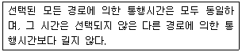
- 수요-공급의 평형
- 교통체계 전체의 평형
- 통행로 평형
- 이용자 평형
(정답률: 65%)
16. 다음 중 교통 서비스 분야에 전부의 개입이 필요한 이유로 적합하지 않은 것은?
- 교통서비스는 공공을 위한 서비스이므로 서비스의 효율성과 형평성을 확보하기 위해 필요하다.
- 교통은 공공재이므로 사적 독점에서 나타나는 부작용을 방지하고, 일정 수준 이상의 서비스를 확보하기 위해 규제와 제한정책을 필요로 한다.
- 교통시설에 대한 투자와 관리가 도시 전역에 미치는 영향이 거의 없다.
- 교통서비스는 일반적인 사적 재화나 용역과 달리 외부효과가 크므로 다분히 공공재적 성격을 지니고 있다.
(정답률: 84%)
17. 4단계 교통수요추정방법 중 수단 분담율은 경제적 특성에 의해 결정된다는 전제로부터 출발하는 것으로, 다음 중 장래의 존별 통행 발생량을 산출한 후 통행분포(Trip distribution)단계 전에 이용 가능한 교통수단 분담율을 산정하여 수단 분담율을 도출하는 방법은?
- 통행단 모형(Trip-end model)
- 중력 모형(Gravity model)
- 카테고리 분석법(Category analysis)
- 통행 교차 모형(Trip exchange model)
(정답률: 80%)
18. 다음은 대중교통수단에 대한 여러 가지 비용을 설명한 것이다. 그림에서 ①, ②, ③이 설명하는 내용이 옳은 것은?
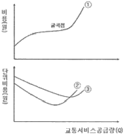
- ①총비용 ②한계비용 ③평균비용
- ①총비용 ②평균비용 ③한계비용
- ①평균비용 ②총비용 ③한계비용
- ①평균비용 ②한계비용 ③총비용
(정답률: 100%)
19. 다음 중 승객의 통행거리에 관계없이 동일한 요금이 부과되는 요금구조로, 장거리 승객에 비해 단거리 승객이 소요비용보다 더 많은 요금을 지불하며 도시확산을 간접적으로 유도할 수 있는 단점을 가지고 있는 것은?
- 균일요금제
- 거리요금제
- 거리비례제
- 구간요금제
(정답률: 94%)
20. 다음 중 교통의 3대 요소로 보기 어려운 것은?
- 교통주체
- 교통수단
- 교통시설
- 교통계획
(정답률: 알수없음)
2과목: 교통공학
21. 다음 중 전통적인 car-following 모형에서 운전자의 가ㆍ감속에 영향을 미치는 요소에 포함되지 않는 것은?
- 앞차와의 속도차
- 반응민감도
- 앞차와의 간격
- 차체의 크기
(정답률: 85%)
22. 다음 그림과 같이 구간별로 교통류 상태가 다를 때, 그 경계면 AA에서의 충격파 속도는?
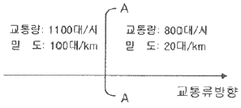
- 3.75km/시
- 4.00km/시
- 5.43km/시
- 7.25km/시
(정답률: 알수없음)
23. 다음 중 교통류의 분석 사례에 따라 적용하는 확률분포 함수의 내용이 옳지 않은 것은?
- 교통류 흐름 내 차두간격의 분포를 파악하기 위하여 멀랑(Erlang)분포를 적용하였다.
- 좌회전 차로의 포켓길이(베이길이)를 산정하기 위하여 포아송 분포를 적용하였다.
- 우회전ㆍ직진 공유차로 교통량 중 적색우회전교통량(RTOR) 추정에 이항분포를 적용하였다.
- 비보호좌회전 용량 산정을 위한 대향 방향 차간 간격의 해석을 위하여 음지수분포를 적용하였다.
(정답률: 알수없음)
24. 고속도로의 특정 지점에 무작위로 도착하는 차량 교통량이 600대/시 일 경우, 향후 30초 동안 4대의 차량이 도착할 확률은?
- 약 13%
- 약 18%
- 약 24%
- 약 32%
(정답률: 알수없음)
25. 간선도로 신호시스템의 연동신호 운영패턴 중 교호시스템(alternate system)에서 옵셋이 주기의 몇 배이어야 하는가?
- 옵셋이 주기의 1/2이어야 한다.
- 옵셋이 주기와 동일하여야 한다.
- 옵셋이 주기 2배이어야 한다.
- 옵셋이 주기 3배이어야 한다.
(정답률: 75%)
26. 다음 중 Greenshields의 속도(u)-교통량(q) 모형으로 옳은 것은? (단, uf : 자유속도, kj : 혼잡밀도, um : 임계속도, km : 임계속도, qm : 최대교통류율)
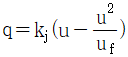
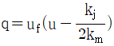
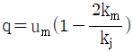
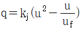
(정답률: 알수없음)
27. 다음의 조건에서 유효녹색시간은 얼마인가?
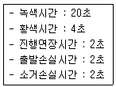
- 18초
- 20초
- 22초
- 24초
(정답률: 알수없음)
28. 밀도가 70대/km이고, 공간평균속도가 35km/h일 때 교통량은 얼마인가?
- 2450대/시
- 2000대/시
- 1200대/시
- 500대/시
(정답률: 91%)
29. 제한속도가 60km/h이고 2.3%의 하향경사인 도로를 주행하던 운전자가 전방에 장애물을 발견하고 급제동하여 가까스로 사고를 면하였다.(장애물 바로 앞에 정지) 장애물은 트럭에서 떨어진 포장박스이며 이를 회수하고자 트럭이 장애물로부터 60m 지점에 정지하여 있었고, 노면에 남은 승용차의 미끄러진 흔적이 45m이었을 때 해당상황을 가장 잘 성명한 것은? (단. 노면마찰계수는 0.35이다.)
- 운전자가 과속한 것이 위험한 상황이 주된 원인이다.
- 운전자는 과속하지 않았으나 트럭이 고속하여 포장박스를 떨어뜨린 것이다.
- 운전자가 과속하지 않아서 사고를 피할 수 있었다.
- 운전자의 과속 여부 및 트럭 운전자의 잘못을 비판할 자료가 부족하다.
(정답률: 50%)
30. 다음 중 고속도로 기본구간 서비스 수준의 효과척도(MOE)는?
- 평균속도
- 설계속도
- 밀도
- 지체시간
(정답률: 70%)
31. 다음 중 교통감응신호에 비하여 정주기신호가 갖는 장점에 대한 설명으로 옳지 않은 것은?
- 일반적으로 교차로 간격이 연속진행에 적합한 경우 교통감응신호보다 정주기신호가 더 좋다.
- 인접신호등과 연동시키기 편리하며, 교통감응신호를 연동시키는 것보다 더 정확한 연동이 가능하다.
- 일반적으로 설치비용이 교통감응신호에 비해 적게 소요되며 장비의 구조가 간단하고 정비수리가 용이하다.
- 독립교차로의 정주기신호에서는 교통량이 많은 경우에 점멸등 운영을 한다.
(정답률: 알수없음)
32. 다음 중 교통량 조사방법으로 거리가 먼 것은?
- 사진측량법
- 루프검지기 조사
- 주행차량이용법
- 가구방문 통행조사
(정답률: 70%)
33. 다음 그림은 병목흐름(Bottleneck flow)인 상태에서의 도착 차량수와 출발차량수를 누적으로 나타낸 시간-차량누적 곡선이다. 이에 대한 설명으로 옳지 않은 것은?
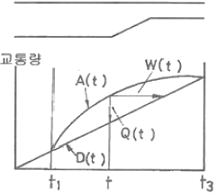
- 차량의 열은 t1에서 시작하여 t3까지 없어지지 않는다.
- t1과 t3사이의 어떤 시간(t)에서의 열의 길이 Q(t)=A(t)-D(t)이다.
- t시간에 도착하는 차량은 W(t)이후에 출발한다.
- 총열의 지체는 t3-t1이다.
(정답률: 84%)
34. 다음 중 교통류의 특성을 나타내는 기본적인 요소와 가장 거리가 먼 것은?
- 속도
- 밀도
- 교통량
- 지체도
(정답률: 알수없음)
35. 다음 중 신호교차로의 이상적인 조건 기준으로 옳지 않은 것은?
- 경사가 없는 접근부
- 접근부 정지선의 삼류부 75m 이내에 노상 주ㆍ정차시설 없음
- 차로폭 3.5m 이상
- 교통류는 승용차로만 구성
(정답률: 67%)
36. 다음 중 도로의 일정 구간을 주행하는 각 차량들의 속도가 동일하지 않은 경우 공간평균속도와 시간평균속도의 관계를 옳게 설명한 것은?
- 공간평균속도와 시간평균속도는 같다.
- 공간평균속도가 시간평균속도보다 작다.
- 공간평균속도가 시간평균속도보다 크다.
- 공간평균속도와 시간평균속도는 비교할 수 없다.
(정답률: 82%)
37. 다음 중 설계 목적을 위한 최소추월시거의 계산을 위해 교통행태에 관하여 가정하는 사항으로 옳지 않은 것은?
- 피추월차량은 일정한 가속도를 가지고 주행한다.
- 추월차량은 추월 기회를 찾으면서 피추월차량과 같은 속도로 안전거리를 유지하며 앞차를 따른다.
- 추월차량의 운전자는 추월 행동을 개시할 때까지 행동 판단 및 반응 시간을 필요로 한다.
- 추월차량은 추월동안 가속을 한다.
(정답률: 73%)
38. 다음 중 설계시간계수(K계수)에 대한 설명으로 옳지 않은 것은?
- 일반적으로 AADT가 큰 도로에서는 비교적 낮다.
- 개발밀도가 증가하면 K계수는 감소한다.
- 일반적으로 지방지역도로가 도시내 도로보다 높은 값을 가진다.
- K계수가 클수록 교통량의 변화가 적다.
(정답률: 50%)
39. 1km 구간의 도로를 통과한 차량 6대의 통행시간을 관측한 값이 42초, 38초, 32초, 36초, 35초, 45초일 때 공간평균속도는 얼마인가?
- 약 26.32km/h
- 약 38.50km/h
- 약 83.73km/h
- 약 94.74km/h
(정답률: 55%)
40. 다음 중 양방통행에 비하여 일방통행이 갖는 장점에 해당하지 않는 것은?
- 상충 이동류 감소
- 용량 증대
- 평균통행속도증가
- 버스용량의 증가
(정답률: 알수없음)
3과목: 교통시설
41. 도로의 구조ㆍ시설 기준에 관한 규칙상 보도의 유효폭은 보행자의 통행량과 주변 토지 이용 상활을 고려하여 결정하되 최소 몇 미터 이상으로 하여야 하는가? (단, 지방지역의 도로와 도시지역의 국지도로에서 지형상 불가능하거나 기존 도로의 증설ㆍ개설 시 불가피하다고 인정되는 경우는 고려하지 않는다.)
- 4.0m
- 3.0m
- 2.0m
- 1.5m
(정답률: 57%)
42. 다음 중 불완전 입체교차형의 하나로서 다른 형식에 비해 점유면적이 가장 적고, 우회거리가 짧아 교통경제상 유리하나 영업소의 설치가 많아져 관리비가 많이 드는 인터체인지의 형태는?
- 트럼펫형
- 다이아몬드형
- 불완전클로버형
- 준직결-평면교차로
(정답률: 74%)
43. 다음 도로의 기능과 이동성 및 접근성과의 관계를 나타낸 그림에서 ②에 해당하는 도로는 무엇인가?
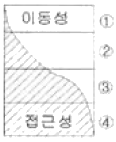
- 고속도로
- 집산도로
- 간선도로
- 국지도로
(정답률: 82%)
44. 설계속도가 120kph인 도로의 평면곡선부에서 완화곡선의 길이는 최소 얼마 이상으로 하여야 하는가?
- 70m
- 60m
- 55m
- 50m
(정답률: 80%)
45. 다음 중 1대당 최소 주차 소요 면적이 가장 작은 주차방식은? (단, 차종은 일반형을 기준으로 하고 장애인용 주차단위 구획의 경우는 고려하지 않는다.)
- 30° 전진주차
- 60° 전진주차
- 60° 후진주차
- 90° 후진주차
(정답률: 67%)
46. 다음 중 완화곡선 및 완화구간에 대한 설명으로 옳은 것은?
- 설계속도가 60km/h 이상인 도로의 평면곡선부에는 완화곡선을 설치하여야 한다.
- 이정량은 완화구간의 길이에 반비례한다.
- 완화곡선의 길이는 최소한 10초간 주행할 수 있는 길이가 필요하다.
- 평면선형의 직선부에서 곡선부로의 구간 사이에만 사용하는 곡선이다.
(정답률: 71%)
47. 다음 중 평면교차로의 상충 유형을 바르게 나타낸 것은?
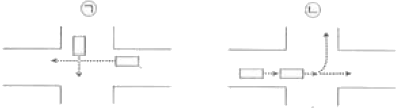
- ㉠합류상충 ㉡엇갈림상충
- ㉠합류상충 ㉡분류상충
- ㉠교차상충 ㉡엇갈림상충
- ㉠교차상충 ㉡분류상충
(정답률: 62%)
48. 다음 중 도로의 기능별 구분에 따른 최소 설계속도 기준이 옳지 않은 것은?
- 도시지역 국지도로 : 50km/h 이상
- 도시지역 집산도로 : 50km/h 이상
- 지방지역 산지부 보조간선도로 : 50km/h 이상
- 지방지역 평지부 국지도로 : 50km/h 이상
(정답률: 65%)
49. 다음 중 평면교차로 설계의 기본원리로 옳지 않은 것은?
- 엇갈림 교차나 굴절교차 등의 변형교차는 피해야 한다.
- 교차로의 면적은 너무 넓지 않게 가능한 한 최소로 한다.
- 상충이 발생하는 교통류 간의 상대속도를 크게 한다.
- 교통 특성이 서로 다른 교통류는 분리시켜야 한다.
(정답률: 73%)
50. 다음 중 도로의 구분에 따른 중앙분리대의 설치 최소 폭기준(m)으로 ①과 ②의 들어갈 내용이 모두 옳은 것은?
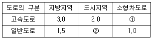
- ①1.5 ②1.0
- ①1.5 ②1.5
- ①2.0 ②1.0
- ①2.0 ②1.5
(정답률: 77%)
51. 다음 중 설계속도가 60km/h 이상인 지방지역 일반도로차로의 최소 폭 기준으로 옳은 것은?
- 2.75m
- 3.00m
- 3.25m
- 3.50m
(정답률: 42%)
52. 다음 중 도로와 철도가 평면교차하는 경우 그 도로의 구조 기준에 대한 설명으로 옳지 않은 것은?
- 건널목 앞쪽 m 지점에 있는 도로 중심선 위의 1m 높이에서 가장 멀리 떨어진 선호의 중심선을 볼 수 있는 곳까지의 거리를 선로방향으로 측정한 길이를 가시구간의 길이라 한다.
- 건널목의 양측에서 각각 30m 이내의 구간(건널목 부분을 포함한다.)은 직선으로 한다.
- 가시구간의 최소길이는 건널목에서의 철도차량의 최고속도에 따라 110m~350m 로 한다.
- 건널목 전ㆍ후 구간 도로의 종단경사는 6% 이하로 한다.
(정답률: 알수없음)
53. 한 차량이 곡선반경(R)이 300m인 평면곡선부를 100kph의 속도로 주행하고 있다. 이 도로에서의 횡방향 마찰계수가 0.2일 때, 차량이 미끄러지지 않기 위한 최대평경사는?
- 약 3%
- 약 5%
- 약 6%
- 약 8%
(정답률: 알수없음)
54. 다음 중 교통섬의 설치 효과로 옳지 않은 것은?
- 도류로를 명시하여 교통의 흐름을 정비한다.
- 보행자를 위한 안전섬의 역할을 할 수 있다.
- 교차로 관련 부대 시설의 설치 장소를 제공한다.
- 차량 정지선의 위치를 후진시킬 수 있다.
(정답률: 85%)
55. 50lm/h로 주행 중인 차량이 평면 신호교차로에서 전방의 신로를 인지하기 위해 확보되어야 하는 최소거리는? (단, 인지반응시간은 2.5초, 감속도는 3.0m/s2이다.)
- 약 57m
- 약 67m
- 약 77m
- 약 87m
(정답률: 92%)
56. 다음 중 차도의 경사에 대한 설명으로 옳지 않은 것은?
- 도로노면의 횡단경사는 노면 위의 우수를 측구 등으로 배수시키기 위하여 필요하며, 그 횡단경사는 노면배수에 충분하고 자동차의 주행에 안전하고 지장이 없는 값이어야 한다.
- 도시지역 차도의 평면곡선부에 적용 가능한 최대 편경사는 8%이다.
- 연결로의 평면곡선부에 적용할 수 있는 최대 편경사는 8%이다.
- 차도의 평면곡선부에는 도로가 위치하는 지역, 적설 정도, 설계속도, 평면곡선 반지름 및 지역 상황에 따라 적용 가능한 최대 평경사값이 결정된다.
(정답률: 50%)
57. 다음 중 과속방지시설의 설치장소에 관한 설명으로 옳지 않은 것은?
- 학교 앞, 어린이 보호구역 등 차량의 통행속도를 저속으로 규제할 필요가 있는 구간에 설치한다.
- 보ㆍ차도의 구분이 없는 도로로서 보행자가 많아 교통사고의 위험이 있다고 판단되는 도로에 설치한다.
- 도로의 굴곡부나 곡선반경이 작은 곳, 또는 시거가 불량한 교차로 등에 설치한다.
- 자동차의 통행속도의 30km/h 이하로 제한할 필요가 있다고 인정되는 도로에 설치한다.
(정답률: 78%)
58. 다음 중 직진차로와 분리하여 우회전 차로를 설치하는 일반적인 조건으로 가장 거리가 먼 것은?
- 우회전 교통량이 많아 직진교통에 지장을 초래한다고 판단되는 경우
- 교차각이 100° 이하인 교차의 경우
- 우회전 자동차의 속도가 높은 경우
- 회전 교통류가 주교통이 되어 우회전 교통량이 상당히 많은 경우
(정답률: 알수없음)
59. 다음 중 차도의 진행방향에 대하여 설계기준 자동차 길이의 반 정도만 여유가 있으면 주차할 수 있고, 주차를 하는 자동차가 동시에 움직일 경우에는 각 자동차 간격을 줄일 수 있는 이점이 있는 주차방식은?
- 30° 주차방식
- 60° 주차방식
- 90° 주차방식
- 평행 주차방식
(정답률: 65%)
60. 다음 중 인터체인지의 연결로 설계 시 유출입 유형의 일관성을 유지할 경우 얻게 되는 장점으로 옳지 않은 것은?
- 차로 변경 횟수를 줄인다.
- 운전자의 혼란을 줄인다.
- 직진 교통류와의 마찰을 줄인다.
- 도로 안내 표지를 복잡하게 할 수 있다.
(정답률: 74%)
4과목: 도시계획개론
61. 다음 중 현행 수도권정비계획법상의 권역 구분에 해당하지 않는 것ㅇ느?
- 과밀억제권역
- 개발유보권역
- 성장관리권역
- 자연보전권역
(정답률: 알수없음)
62. 다음 중 도시계획시설로서의 도로의 규모별 구분에 따른 기준 내용이 옳지 않은 것은?
- 소로1류-폭 10m 이상 12m 미만인 도로
- 중로1류-폭 15m 이상 20m 미만인 도로
- 대로1류-폭 35m 이상 40m 미만인 도로
- 광로1류-폭 70m 이상인 도로
(정답률: 알수없음)
63. 다음 중 전원도시(garden city)에 대한 설명으로 가장 거리가 먼 것은?
- 하워드(E. Howard)에 의해 제시되었다.
- 인구 규모 조건은 3~5만명 정도로 한정한다.
- 위성도싣의 발달은 하워드의 전원도시에서 유래한다고 볼 수 있다.
- 기능적인 성장을 도모하고 공정한 토지분배를 하는 것이 주요 목적이다.
(정답률: 알수없음)
64. 다음 중 근린주거구역의 교통을 보조간선도로에 연결하여 근린주거구역 내 교통의 집산기능을 하는 도로로서 근린주거구역의 내부를 구획하는 도로는?
- 간선도로
- 특수도로
- 국지도로
- 집산도로
(정답률: 알수없음)
65. 다음은 A도시의 과거 인구 자료이다. 등차급수법에 의한 10년 후(2015년)의 도시 인구는 얼마로 예측할 수 있는가?
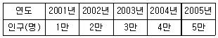
- 10만명
- 12만명
- 14만명
- 15만명
(정답률: 73%)
66. 다음 중 소득분배 상태를 나타내는 지표로서의 지니계수(Gini coefficient) 중 가장 완전한 균등분배상황을 나타내는 수치는?
- 0.5
- 0
- 1
- -1
(정답률: 82%)
67. 다음 중 격자형 가로망에 대한 설명으로 옳지 않은 것은?
- 지형이 평탄한 도시에 적합하다.
- 도심의 기념비적인 건물을 중심으로 사방과 연결된다.
- 도로 기능의 다양성이 결여될 수 있다.
- 뉴욕과 필라델피아에서 볼 수 있다.
(정답률: 알수없음)
68. 다음 중 기준년도의 인구와 출생률, 사망률, 인구이동 등의 인구 변화 요인을 고려하여 장래 인구를 추정하는 방법은?
- 직선모형
- 비율적용법
- 로지스틱커브법
- 집단생잔법
(정답률: 70%)
69. 다음 중 개발제한구역(greenbelt)에 관한 설명으로 가장 옳은 것은?
- 개발제한구역은 자연녹지지역의 다른 표현이다.
- 개발제한구역에서는 모든 건축 활동이 금지된다.
- 개발제한구역은 다른 용도지역처럼 건축제한이 없다.
- 개발제한구역에서 법이 정하는 건축활동을 할 수 있다.
(정답률: 58%)
70. 다음 H. Hoyt의 선형이론(Sector Theory)에서 제3구역은 어떤 기능지역에 해당하는가?
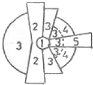
- 중심지구
- 도매 경공업 지구
- 저소득층 주거지구
- 고소득층 주거지구
(정답률: 79%)
71. 다음 중 현행 국토의 계획 및 이용에 관한 법률에서 정하고 있는 기반시설 중 교통시설에 해당하는 것은?
- 자동차정류장
- 시장
- 공공청사
- 광장
(정답률: 64%)
72. 다음 중 토지이용계획의 목표인 공공이익의 요소에 해당하지 않는 것은?
- 안전성
- 편의성
- 공공의 경제성
- 신속성
(정답률: 알수없음)
73. 다음 중 본 튀넨(von Thunen)의 토지이용모델에서 도시주변의 특정 지점에서 이루어지는 재배작물의 유형을 결정 하는 요인에 해당하지 않는 것은?
- 지대
- 재배 작물 토지의 규모 및 형태
- 시장(도시)까지의 거리와 수송비
- 시장에서 판매되는 당해 농산물의 판매 가격
(정답률: 64%)
74. 다음 중 게데스(P. Geddes)가 제안한 개념으로, 한 때 분리되어 있던 취락이 방사형 발달을 통해 하나의 연속적인 시가지로 합쳐지는 현상을 무엇이라고 하는가?
- Meteoplis
- Megalopolis
- Conurbation
- Ecumenoplis
(정답률: 73%)
75. 다음 중 도시구성의 양단부가 개방적이며 산간지대의 도시 구성에 적합하고 특히 공업도시에 적합한 도시구성 형태는?
- 대상형(선상형)
- 방사형
- 방사환상형
- 격자형
(정답률: 67%)
76. 다음 중 아디케스법의 기본 개념으로 가장 알맞은 것은?
- 토지 구획 정리에 관한 것
- 도시의 장기 발전계획에 관한 것
- 재개발 계획에 관한 것
- 신도시 개발 계획에 관한 것
(정답률: 60%)
77. 다음 중 현재의 토지이용상황을 조사ㆍ분석하여 장래의 토지공간수요를 추정하고, 이를 한정된 토지 위에 합리적으로 배치 또는 유도하는 계획은?
- 택지개발계획
- 도시정비계획
- 시설물입지계획
- 토지이용계획
(정답률: 알수없음)
78. 다음 중 지리정보시스템(GIS)에 대한 설명으로 옳지 않은 것은?
- 도형자료가 점, 선, 면의 형태로 이루어져 있다.
- 자료를 다양한 방법과 관점에서 통합하여 모델링할 수 있다.
- 지리적 정보를 이용하여 데이터베이스를 구축ㆍ관리할 수 있다.
- 속성자료는 3차원의 화상으로 이루어져 있다.
(정답률: 70%)
79. 다음 중 보행자전용도로의 결정기준으로 옳지 않은 것은?
- 보행자의 통행으로 인하여 차량통랭에 지장을 초래할 것으로 예상되는 지역에는 설치하지 말 것
- 도심지역ㆍ부도심지역ㆍ주택지ㆍ학교 및 하천주변지역 등에서는 일반도로와 그 기능이 서로 보완관계가 유지되도록 할 것
- 보행자통행량의 주된 발생원과 버스정류장ㆍ지하철역 등 대중교통시설이 체계적으로 연결되도록 할 것
- 보행의 쾌적성을 높이기 위하여 녹지체계와의 연관성을 고려할 것
(정답률: 37%)
80. 다음 중 우리나라 공간계획의 체계를 상위계획에서 하위계획의 순으로 옳게 나열한 것은?
- 도시계획-지역계획-국토계획-단지계획
- 국토계획-지역계획-도시계획-단지계획
- 국토계획-단지계획-지역계획-도시계획
- 지역계획-국토계획-도시계획-단지계획
(정답률: 75%)
5과목: 교통관계법규
81. 다음 중 도로교통법상 앞지르기가 금지 장소만으로 옳게 나열된 것은?
- 횡단보도, 교차로, 터널 안, 다리 위
- 비탈길의 고개마루 부근, 가파른 비탈길의 내리막
- 도로의 구부러진 곳, 버스정류장, 학교 앞
- 가파른 비탈길의 오르막, 안전지대가 설치된 곳
(정답률: 40%)
82. 다음 중 도로법상 도로의 부속물에 해당하지 않는 것은?
- 도로경계표
- 이정표
- 궤도
- 공동구
(정답률: 91%)
83. 다음 중 국토해양부장관이 도시교통정비지역으로 지정ㆍ고시할 수 있는 대상 지역 기준은? (단, 도농복합형태의 시의 경우는 고려하지 않는다.)
- 인구 50만명 이상의 도시
- 인구 40만명 이상의 도시
- 인구 30만명 이상의 도시
- 인구 10만명 이상의 도시
(정답률: 64%)
84. 도로의 관리청은 그 소관 도로의 장기적인 정비방향을 제시하는 도로정비 기본계획을 몇 년 단위로 수립하여야 하는가?
- 5년
- 10년
- 15년
- 20년
(정답률: 64%)
85. 다음 중 도로법령상 국토해양부장관의 자문에 응하여 도로에 관한 중요정책을 심의하기 위하여 국토해양부장관 소속으로 두는 도로정책심의회의 위원 구성 기준으로 옳은 것은?
- 위원장 1명과 부위원장 1명을 포함한 20명 이내의 위원으로 구성한다.
- 위원장 1명과 자문의원 2명을 포함한 20명 이내의 위원으로 구성한다.
- 위원장 1명과 부위원장 1명을 포함한 30명 이내의 위원으로 구성한다.
- 위원장 1명과 자문의원 2명을 포함한 30명 이내의 위원으로 구성한다.
(정답률: 46%)
86. 다음 중 도시계획 수립 대상 지역의 일부에 대하여 토지이용을 합리화하고 그 기능을 증진시키며 미관을 개선하고 양호한 환경을 확보하며, 그 지역을 체계적ㆍ계획적으로 관리하기 위하여 수립하는 도시관리계획은?
- 도시기본계획
- 광역도시계획
- 지구단위계획
- 국토종합계획
(정답률: 74%)
87. 다음 중 도시교통정비촉진법형상 시장 또는 군수가 도시교통정비기본계획을 수립하기 위하여 실시하는 조사에서 포함되어야 할 사항으로 거리가 먼 것은?
- 인구 등 사회ㆍ경제지표 현황 및 전망
- 자동차 보유 현황 및 증가 추세
- 간선도로 및 교차로에서의 교통량 현황과 그 변화 추이
- 주차장 현황과 이용 특성 추이
(정답률: 50%)
88. 종단경사가 있는 구간에서 자동차의 오르막 능력 등을 검토하여 필요하다고 인정되는 경우 오르막차로를 설치하여야 하나, 설계속도가 시속 얼마 이하인 경우에는 오르막차로를 설치하지 아니할 수 있는가?
- 30km
- 40km
- 50km
- 60km
(정답률: 75%)
89. 다음 중 도로교통법상 차마의 운전자가 도로의 중앙이나 좌측부분을 통행할 수 있는 경우는?
- 편도교통이 혼잡한 경우
- 도로가 일반통행인 경우
- 중앙선이 있는 도로에서 진로를 변경하는 경우
- 대형차가 진로를 방해할 경우
(정답률: 알수없음)
90. 다음 중 교통안전법령에 따른 교통안전관리자의 직무에 해당하지 않는 것은?
- 차량운전자등의 운행 중 근무상태 파악 및 교통안전 교육ㆍ훈련 실시
- 교통사고피해자에 대한 적정한 손해배상의 보장에 관한 사항
- 도로조건, 선로조건, 항로조건 및 기상조건에 따른 안전 운행에 필요한 조치
- 교통사고원인의 조사ㆍ분석 및 기록 유지
(정답률: 87%)
91. 다음 중 도로교통법규상 자동차의 운행속도를 최고속도의 100분의 50을 줄인 속도로 운행하여야 하는 경우(기준)로 옳은 것은?
- 비가 내려 노면이 젖어있는 경우
- 눈이 20밀리미터 미만 쌓인 경우
- 노면이 얼어붙은 경우
- 폭우ㆍ폭설ㆍ안개 등으로 가시거리가 80미터 이내인 경우
(정답률: 74%)
92. 다음 중 정차 및 주차가 금지되는 장소 기준으로 옳지 않은 것은?
- 교차로의 가장자리 또는 도로의 모퉁이로부터 10m 이내인 곳
- 안전지대가 설치된 도로에서는 그 안전지대의 사방으로부터 각각 10m 이내인 곳
- 건널목의 가장자리 또는 횡단보도로부터 10m 이내의 곳
- 버스여객자동차의 정류를 표시하는 기둥이나 판 또는 선이 설치된 곳으로부터 10m 이내인 곳
(정답률: 58%)
93. 다음 중 도로교통법상 도로에서의 위험을 방지하고 교통의 안전과 원활한 소통을 확보학 위하여 필요하다고 인정하는 때에 신호기 및 안전표지를 설치ㆍ관리하여야 하는 자에 해당하지 않는 경우는?
- 특별시장
- 광역시장
- 시장
- 도지사
(정답률: 73%)
94. 다음 중 아래의 설명에서 ()안에 공통으로 들어갈 말로 옳은 것은?
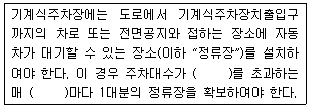
- .10대
- 20대
- 30대
- 50대
(정답률: 73%)
95. 도로교통법에서 정의하는 자동차에 해당하지 않는 것은?
- 승용자동차
- 승합자동차
- 화물자동차
- 원동기장치자전거
(정답률: 92%)
96. 다음 중 도시교통정비지역에서 교통유발부담금의 부과대상시설물은 해당 시설물의 각층 바닥 면적을 합한 면적이 최소 얼마 이상인 시설물로 하는가? (단, 부과대상 시설물이 주택법에 따른 주택단지에 위치한 시설물로서 도로변에 위치하지 아니한 시설물인 경우는 고려하지 않는다.)
- 1000m2
- 2000m2
- 3000m2
- 4000m2
(정답률: 79%)
97. 다음 중 도로법에 구분된 도로의 종류에 해당하는 것만으로 나열된 것은?
- 고속도로, 일반도로, 자동차전용도로
- 고속국도, 일반국도, 특별지도, 지방도
- 국도, 도도, 시도, 군도
- 고속국도, 일반국도. 특별국도
(정답률: 90%)
98. 다음 중 도로의 구분에 따른 설계기준자동차의 종류별 제원에 따라 그 높이가 가장 높은 경우는?
- 3.0m
- 3.5m
- 4.0m
- 4.5m
(정답률: 47%)
99. 다음의 ()안에 들어갈 말로 알맞은 것은?
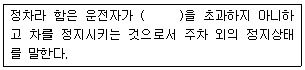
- 1분
- 3분
- 5분
- 10분
(정답률: 80%)
100. 다음 중 노상주차장을 설치할 수 없는 자는?
- 시장
- 경찰서장
- 군수
- 구청장
(정답률: 40%)
6과목: 교통안전
101. 다음 중 야간사고가 많이 발생하는 지점에 대한 개선 대책으로 가장 거리가 먼 것은?
- 조명시설 증설
- 반사도가 높은 특수노면표지 설치
- 미끄럼 방지 포장
- 시선유도 표지 설치
(정답률: 75%)
102. 다음 중 안전표지에 해당하지 않는 것은?
- 주의표지
- 규제표지
- 안내표지
- 지시표지
(정답률: 54%)
103. 다음 중 교차로에서의 사고율에 대한 일반적인 설명으로 가장 적합한 것은?
- 일반적으로 4지교차로가 3지교차로보다 사고율이 낮다.
- 교차로의 교통통제방법은 교통사고에 영향을 미친다.
- 사고율은 교차로의 교통량에 영향을 받지 않는다.
- 좌회전 교통량이 많을수록 사고율이 높아진다.
(정답률: 70%)
104. 다음 중 지도상에 핀을 꽂거나 색종이를 붙여 표시를 하여 사고가 집중적으로 발생하는 지점의 신속한 시각적 색인을 제공하는 것은?
- 사고지점도
- 충돌도
- 대상도
- 현황도
(정답률: 77%)
1⑤. 다음 중 교통정온화(traffic calming) 기법에서 차량의 속도를 감소시키기 위한 대책으로 거리가 먼 것은?
- 과속방지시설 설치
- 차로 추가 설치
- 차로굴절
- 노폭제한
(정답률: 알수없음)
106. 다음 중 사고건수법에 따른 교통사고의 위험지점 선정시 필요한 자료로 가장 거리가 먼 것은?
- 기간
- 사고지점
- 구간거리
- 교통량
(정답률: 60%)
107. 다음 중 미끄러운 노면에 의해 발생하는 비신호 교차로에서의 추돌사고에 대한 일반적인 대책으로 적합하지 않은 것은?
- 노면 재포장
- 포장 그루밍(grooving)
- 횡단보도의 재배치
- 미끄럼 주의표지 설치
(정답률: 알수없음)
108. 다음 중 과속방지시설의 설치규격 표준은?
- 폭 : 2m, 높이 : 10cm
- 폭 : 2m, 높이 : 5cm
- 폭 : 3.6m, 높이 : 10cm
- 폭 : 3.6m, 높이 : 5cm
(정답률: 84%)
109. 다음의 교통사고 위험도 평가 방법 중 과거의 사고자료를 사용하지 않고 어떤 장소에서 짧은 시간 동안 수시로 충돌에 근접하는 교통현상을 관측하여 그 장소의 사고 위험성을 평가하는 것은?
- 사고건수법
- 사고율법
- SP조사법
- 교통상충법
(정답률: 50%)
110. 교통사고의 유발요인을 크게 인적ㆍ도로환경적ㆍ차량요인으로 구분할 때 다음 중 인적요인에 해당하는 것은?
- 도로의 결빙
- 브레이크 파열
- 운전 중 전화통화
- 신호등 고장
(정답률: 85%)
111. 다음 중 교통사고 자료의 수집 시 일반적인 고려사항에 대한 설명으로 적절하지 않은 것은?
- 교통사고의 발생장소에 대한 위치정보는 XㆍY좌표를 이용하는 것보다 주소체계를 활용하여 기입하는 것이 향후 교통사고자료를 활용할 때 더욱 편리하다.
- 교통사고조사 양식은 가급적 코드화시켜 조사자에 따라 내용이 달라질 수 있는 여지를 줄이는 것이 좋다.
- 도로교통사고 조사양식은 주기적으로 그 타당성을 검토하는 것이 바람직하다.
- 도로교통사고 자료는 가급적 지리정보체계(GIS)를 통해 관리하여 향후 활용성을 높이는 것이 바람직하다.
(정답률: 72%)
112. 다음 중 율-품질관리법(Rate-Quality Control)은 교통사고의 발생이 어떠한 분포를 따른다고 가정하는가?
- 포아송분포
- 이항분포
- 음지수분포
- 지수분포
(정답률: 73%)
113. 교통사고 분석의 내용에 해당하는 것과 거리가 먼 것은?
- 기본적인 사고통계 비교
- 사고방지 대책을 위한 예산배정
- 개별사고의 원인분석
- 사고 잦은 지점의 판별 및 사고특성 파악
(정답률: 87%)
114. 한 차량이 도로를 벗어나 도로의 맨 끝으로부터 수평거리 5m, 높이차가 10m인 지점에 추락하였다면 이 차량이 도로를 벗어날 때의 속도는 얼마인가?
- 12.6kph
- 13.1kph
- 14.6kph
- 16.2kph
(정답률: 알수없음)
115. 주행하던 어떤 트럭이 앞 차량과의 추돌을 피하기 위해 급정거한 후 30m를 미끄러진 후 3m를 지나서 다시 20m를 미끄러진 후 정지하였다. 노면의 마찰계수가 0.7이고 평탄한 구간이었을 때 이 차량의 제동 전 초기속도는 약 얼마인가?
- 75.5km/h
- 90.8km/h
- 85.6km/h
- 94.3km/h
(정답률: 알수없음)
116. 다음 중 사고를 초래할 수 있는 운전자의 행동으로 볼 수 없는 것은?
- 법규위반(violation)
- 착오(lapses)
- 실수(errors)
- 침착(patience)
(정답률: 84%)
117. 다음 중 충돌도에 대한 설명으로 옳지 않은 것은?
- 수 마일 연장의 균일한 도로구간에 대하여 작도된다.
- 거의 축척을 무시하고 작도된다.
- 화살표는 중복되거나 뒤섞이기 때문에 정확한 경로를 나타내지 못하므로 개략적이다.
- 화살표나 기호로 사고에 관련된 차량이나 보행자의 경로, 사고의 유형 및 정도를 도식적으로 나타낸다.
(정답률: 64%)
118. 35km의 도로 구간에서 1년 동안 50건의 교통사고가 발생하였다. 일평균 교통량이 6000대이고 총 사고건수 중 5%가 치명적인 사고이었다면 1억대ㆍkm당 치명적 사고의 발생률은?
- 65.2건
- 32.6건
- 3.26건
- 1.46건
(정답률: 66%)
119. 다음 중 운전자의 운전능력과 운전자에 대한 환경적 요구에 관한 설명으로 옳지 않은 것은?
- 운전능력이 환경적 요구에 부응하지 못할 때 사고가 발생한다.
- 운전자에 대한 환경적 요구는 시간에 따라 변한다.
- 운전자는 일어나는 상황에 반응만 할 뿐, 새로운 상황을 발생시키지는 않는다.
- 운전자의 능력은 운전자의 특성에 영향을 받는다.
(정답률: 86%)
120. 다음 중 교통사고 예방과 피해 감소를 위한 각종 대책으로 대별되어지는 3E에 해당하지 않는 분야는?
- 공학(Engineering)
- 환경(Environment)
- 규제(Enforcement)
- 교육(Education)
(정답률: 84%)